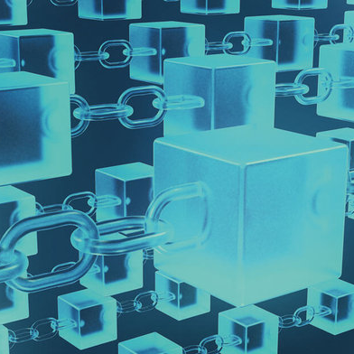

Tecnologia blockchain

Blockchain nació por la necesidad de eliminar intermediarios como los bancos, en el caso de las operaciones financieras. Estas instituciones son necesarias para poder hacer transacciones de valor, porque ellas se encargan de certificar que somos quienes decimos ser. A cambio de prestarnos este servicio, los bancos o las plataformas electrónicas como PayPal se quedan con los datos de los usuarios y comercian con ellos. Esto restringe la privacidad y con ello la libertad. Las cadenas de bloques llegaron para cambiar esto.
Se trata de una gran base de datos en el que muchos nodos guardan una copia de la información.
#1
#2
Blockchain basa la certificación de la información en el consenso, es decir, si todos tenemos la misma información, significa que esa información es verdadera.
Cada transacción que se hace se va sumando como un bloque a una cadena.
#3
#4
Los registros están enlazados y además, cifrados para proteger tanto la seguridad como la privacidad de las transacciones.
Con esta tecnología no es un solo participante el que tiene la información sino millones
#5
#6
Dichas transacciones son anónimas. Es decir, el sistema solo conoce que desde una cartera digital se quiere transferir cierta cantidad a otra.
Bloques
En la blockchain de Bitcoin un bloque es el que se genera mediante el sistema Proof of Work (PoW), cuando un ordenador (o un pool de ellos) resuelve el problema o acertijo planteado de forma automática por la red.
La idea de la creacion de bloques se ideo a causa de lo tedioso que resultaban las validacioones puesto que se hacen demasiadas por segundo y se logro a través de la minería de bitcoins, que permiten referenciar toda la información de un bloque a través de un hash y hacerla más
manejable y por lo tanto, más eficiente.
La estructura de los bloque se componen en la de una parte del bloque anterior y algunos datos de las Qué es una pool de transacciones que han hecho los usuarios. Además añade otros datos como una timestamp y el nonce.
Lo que no lleva a que es una casdena de bloques
Una cadena de bloques es esencialmente solo un registro, un libro mayor de acontecimientos digitales que está “distribuido” o es compartido entre muchas partes diferentes. Solo puede ser actualizado a partir del consenso de la mayoría de participantes del sistema y, una vez introducida, la información nunca puede ser borrada. La cadena de bloques de Bitcoin contiene un registro certero y veri cablede todas las transacciones que se han hecho en su historia.
Monederos virtualess
Un monedero virtual es un modelo de pago alternativo a lo que conocemos hoy en día. Es decir, es un software que se utiliza como monedero y el cual nos permite guardar, enviar y recibir criptomonedas . Estos monederos tienen un sistema de encriptado, lo que hace que nadie pueda acceder a nuestra cartera sin una clave privada.
¿Cómo funciona un monedero virtual?
Para poder operar con un monedero virtual, necesitarás una clave. Dicha clave será tu identificación de acceso y con la cual, podrás acceder a ver el número de monedas que tienes disponibles en tu monedero. Esta clave, como su propio nombre indica, es personal e intransferible.
Para recibir las monedas, se te creará una clave pública a raíz de tu clave privada. Esta clave pública, deberás enviársela a las personas con las que operes para que te puedan enviar dinero a tu monedero virtual. Este proceso se realiza a través de un método criptográfico que se denomina ‘Criptografía asimétrica’. Por tanto, un monedero virtual, te permite realizar operaciones con otros usuarios a través de tus monedas virtuales
Tipos de monederos virtuales
Monederos escritorio
son las que los usuarios utilizan de manera más habitual. Su uso es muy sencillo. Basta con introducir la clave privada en un dispositivo informático y tener conexión a internet desde el mismo.
Monederos hardware
este tipo de monederos son más complejos que los
anteriores. Son dispositivos que se fabrican con el fin último de operar con ellos. Esto les obliga a tener una mayor seguridad. Su coste es mayor que el del resto de monederos virtuales.
Monederos online
permiten realizar las operaciones a través de plataformas de terceros. Son más fáciles de utilizar que las anteriores, ya que no es necesaria tener experiencia para su uso. No obstante, este tipo de monederos corren el riesgo de ser hackeados con mayor facilidad.
Monederos móvil
son similares a los monederos de escritorio. La única diferencia, es que estos se controlan a través de dispositivos móvil, por lo que es más cómodo manejarlos.
Criptomonedas
Las criptomonedas, también llamadas criptodivisas o criptoactivos, son un medio digital de intercambio. Cumple la función de una moneda, y de ahí que se las conozca con ese nombre. Sin embargo, es algo totalmente digital, que utiliza métodos criptográficos para asegurar sus transacciones financieras, controlar la creación de nuevas unidades y verificar la transferencia de activos.
Ventajas
- Todo es cifrado
- Ningún organismo las controla
- Rápides, con independencia a dónde se realice la transacción
- Puedes utilizarlas 24 horas al día, 365 días al año
- Cada transacción requiere una cantidad de criptomonedas para realizarse
- Es un sistema transparente
- Las transacciones no se pueden modificar.
- Tienes control sobre la información de todas tus transacciones
- La cadena de bloques tiene multitud de aplicaciones
Desventajas
- Es una tecnología en desarrollo.
- Los métodos de autorización requieren demasiados recursos.
- Si te equivocas o eres víctima de un estafa y envías criptomonedas a una dirección fraudulenta, las perderás y no podrás recuperarlas
- La velocidad de la red puede variar según la saturación de la misma
- Imposibilidad de recuperar cuentas perdidas
Importancia
La utilidad de esta tecnología es que con ella desaparecen los intermediarios. Tienes registros sin registradores, pruebas de datos que no se pueden modificar, ya que quitar un eslabón de la cadena y poner otro en su lugar es, en la práctica, imposible. Es como el tiempo, puedes ir hacia delante pero no hacia atrás, no se puede cambiar. En este punto entran en juego dos conceptos, uno es el de la identidad digital soberana.
Impacto en la economia
Blockchain tiene la capacidad de proporcionar transparencia de extremo a extremo en la cadena de suministro. Esto permite identificar la fuente de los productos y permite también prevenir pérdidas financieras y de artículos. Prevención del fraude: El Blockchain se creó con el fin de evitar las transacciones fraudulentas en el intercambio de divisas digitales. Los líderes minoristas utilizan esta tecnología para evitar que artículos falsificados lleguen hasta sus clientes.
Administración de la identidad e información de los consumidores: Esta tecnología permitiría a los minoristas a cumplir con las leyes de privacidad de datos, a través de los contratos inteligentes.
Uso de criptomonedas: El Blockchain permite la utilización de criptomonedas como un medio de intercambio de valor. Esto es importante para los minoristas cuando manejan pagos transfronterizos y micropagos.